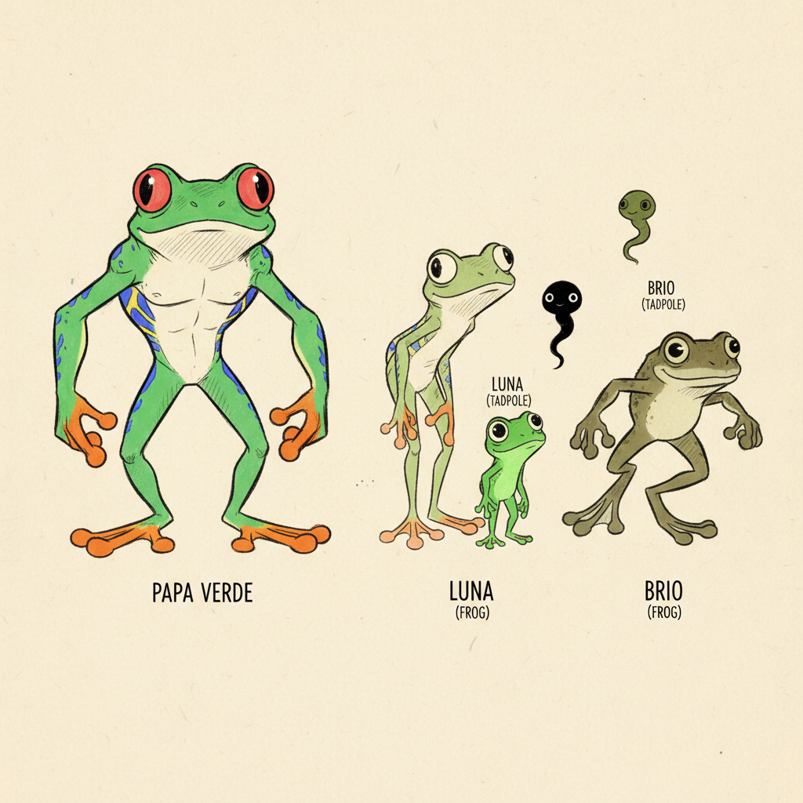
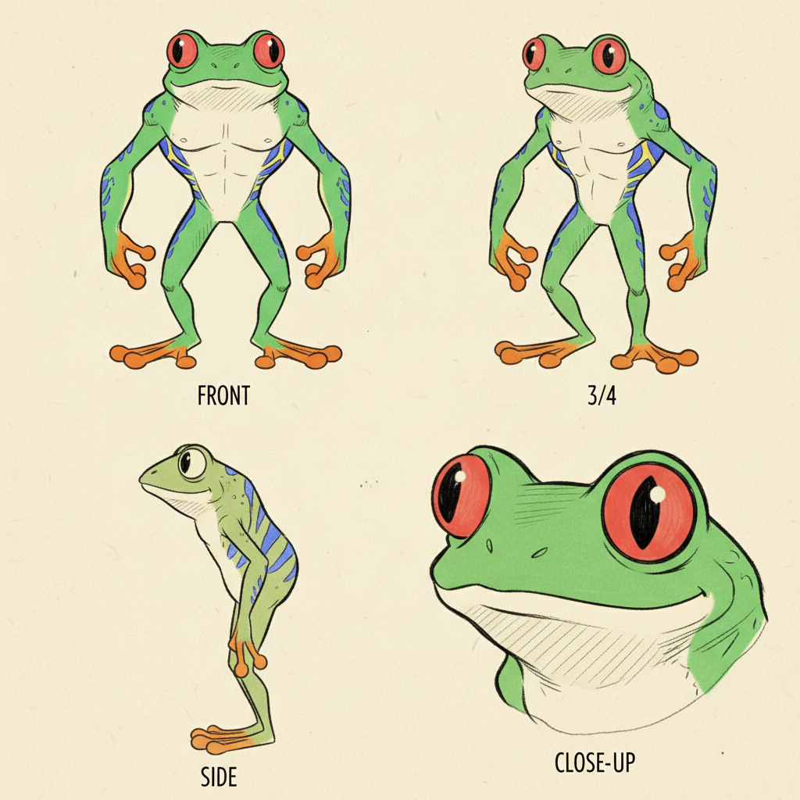
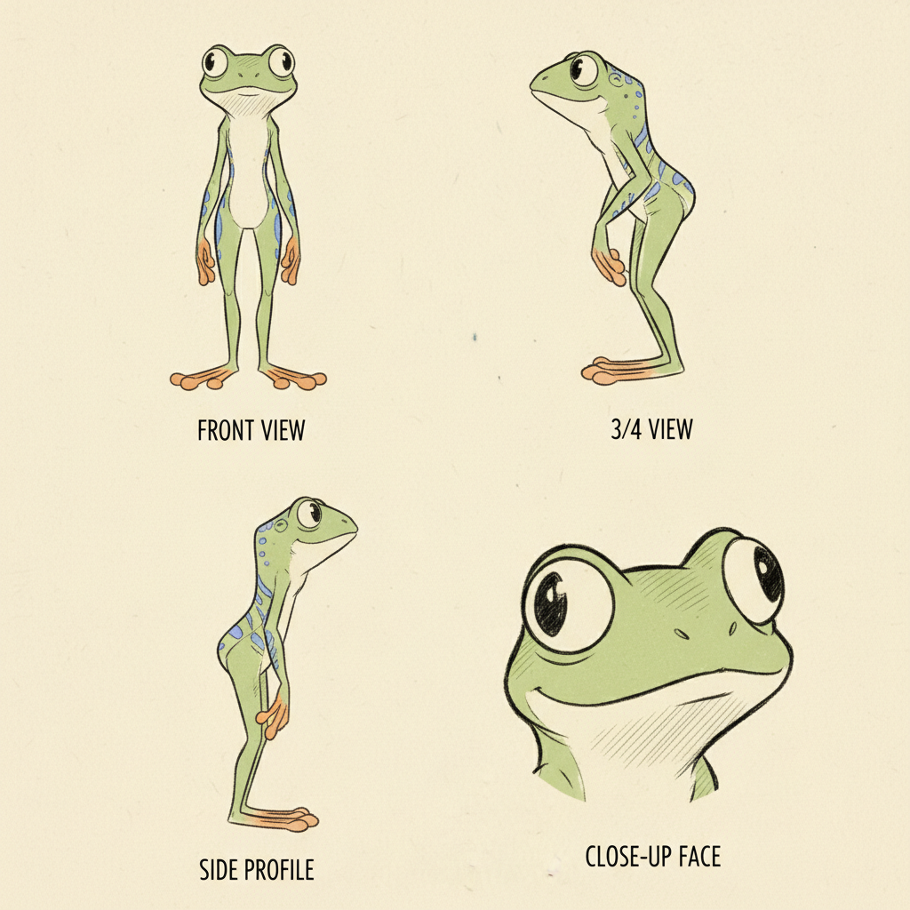
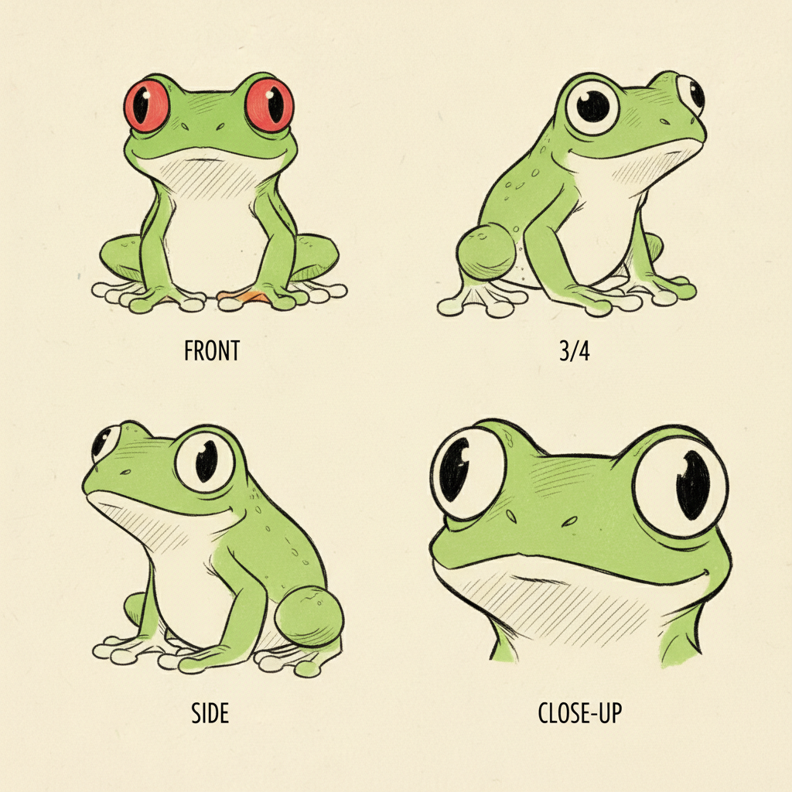
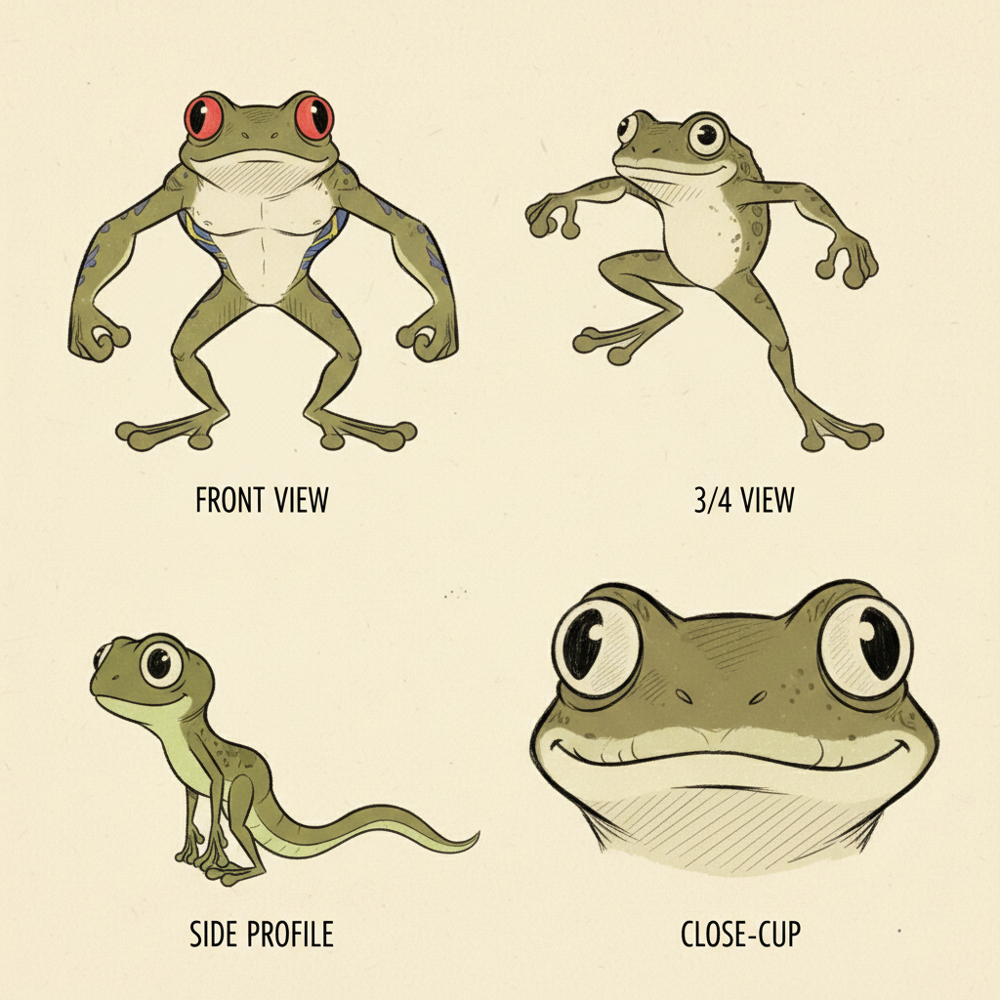
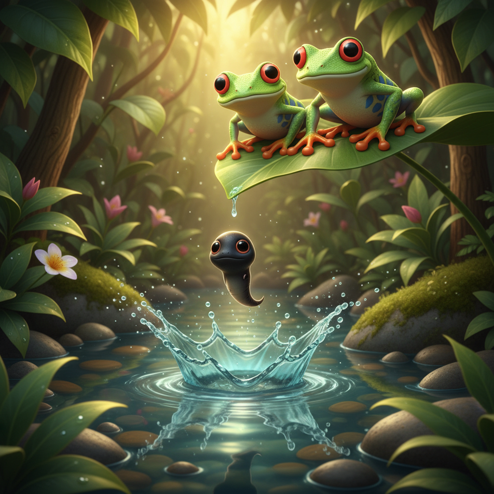
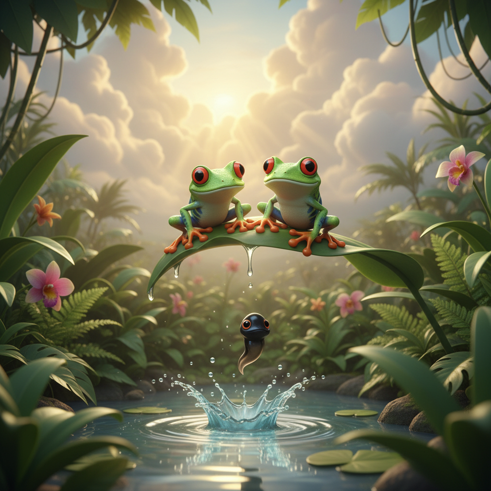
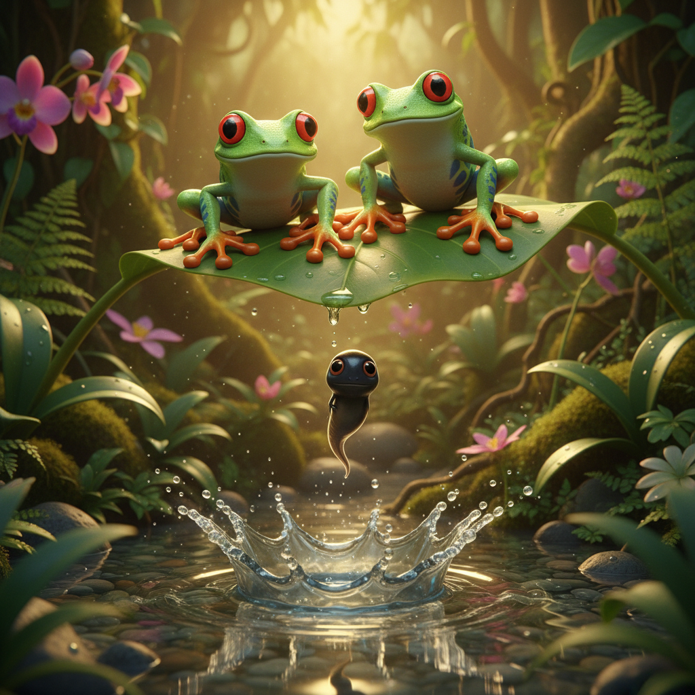
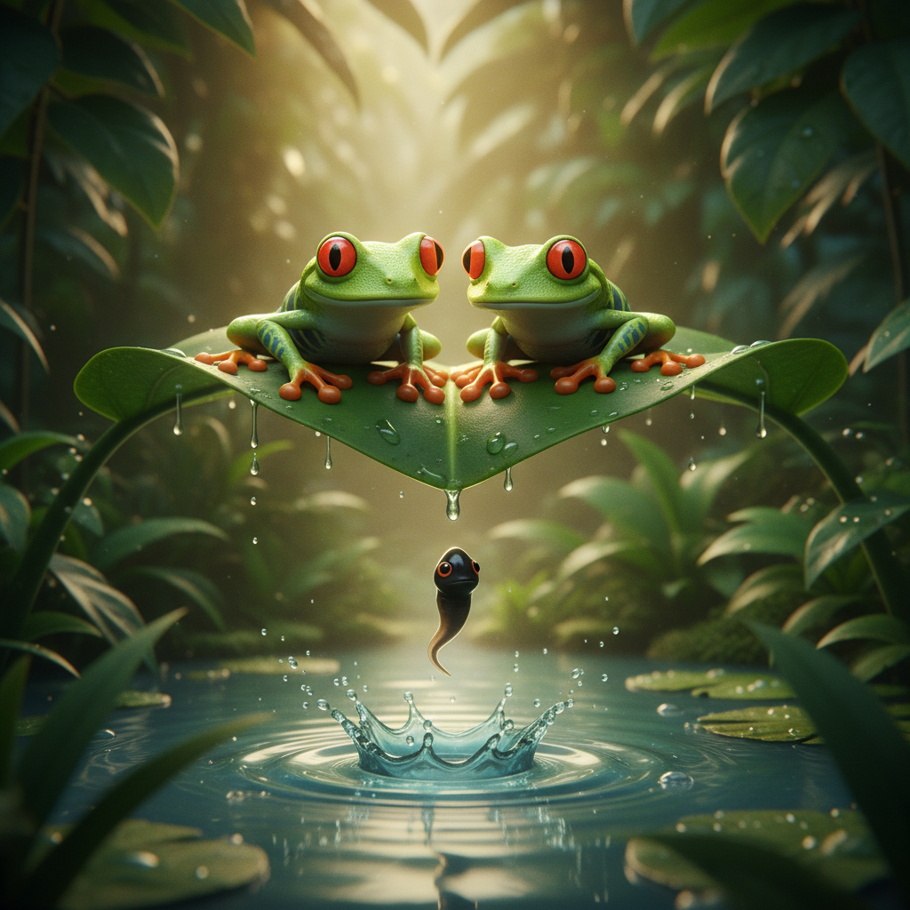
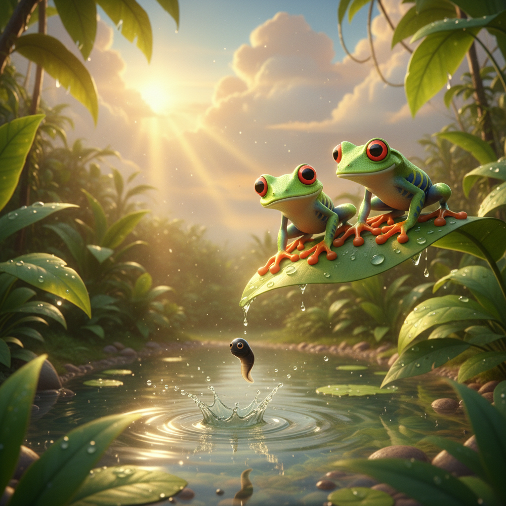

Frogs: The Great Transformation
Follow Luna the red-eyed tree frog through her incredible metamorphosis from egg to tadpole to frog, guided by her loving family in the tropical rainforest
Preface
Welcome to the magical tropical rainforest, where one of nature's greatest miracles happens every day — a tiny egg becomes a swimming tadpole, and then transforms into a beautiful leaping frog! In this adventure, we'll follow Luna through her incredible metamorphosis.
Red-eyed tree frogs are one of the most beautiful creatures on Earth. Their bright green bodies, stunning red eyes, blue-striped sides, and bright orange feet make them look like living jewels of the rainforest. And both Mama and Papa work together to keep their babies safe!
Through Luna's journey, you'll discover how tadpoles breathe underwater with gills, how legs magically appear, how tails disappear, and how sticky toe pads let tree frogs climb anything. Get ready for the most amazing transformation you've ever seen!
Art Direction
Pre-Production Pipeline
Step 0: Storyline
pending (0 attempts)
pendingStep 1: Unified Cast Sheet
approved (1 attempts)
ApprovedStep 2: Character Sheets
approved
Papa Verde: approvedMama Hoja: approved
Luna: approved
Brio: approved
Step 3: Mood Proposals
approved
Moods: translucency, lush-botanicalStep 1: Unified Cast Sheets

approved.jpg (APPROVED) unified-cast-v1.jpg
unified-cast-v1.jpg
Step 2: Papa Verde Sheets

approved.jpg (APPROVED) sheet-v1.jpg
sheet-v1.jpg
Step 2: Mama Hoja Sheets

approved.jpg (APPROVED) sheet-v1.jpg
sheet-v1.jpg
Step 2: Luna Sheets
 approved.jpg (APPROVED)
approved.jpg (APPROVED)

sheet-v1.jpgStep 2: Brio Sheets

approved.jpg (APPROVED) sheet-v1.jpg
sheet-v1.jpg
Step 3: Pixar Mood Proposals

APPROVED 1-translucency-botanical
1-translucency-botanical

2-epic-intimate
3-golden-botanical
4-translucency-intimate
5-epic-goldenCharacter Cast
Papa Verde
Handsome red-eyed tree frog father with brilliant green body, huge glowing red eyes, blue-yellow striped sides, bright orange feet
No portraitMama Hoja
Beautiful red-eyed tree frog mother with soft green coloring, gentle red eyes, slightly smaller and more delicate than Papa
No portraitLuna
Starts as tiny black tadpole, transforms through stages into a small bright green red-eyed tree frog with huge curious red eyes
luna-tadpole.jpgBrio
Luna's older brother, slightly bigger green-brown tadpole with developing legs, later a young red-eyed tree frog
brio-portrait.jpgScene Plan (11 scenes)
Meet Papa Verde
Papa Verde is the most handsome frog in the entire rainforest! His body is a brilliant, shining green — like a living emerald. His enormous red eyes glow like rubies in the moonlight. His sides are striped with beautiful blue and yellow, and his feet are the brightest orange you've ever seen. Tonight, Papa has the most important job: he is guarding the eggs that he and Mama laid together on a big green leaf hanging over the pond. 'I'll watch over you all night,' he promises.
Mama Hoja and the Tiny Eggs
Mama Hoja chose the perfect leaf — big, strong, and hanging right over the safest pond in the rainforest. Together, she and Papa Verde carefully placed their tiny eggs on the leaf. The eggs look like little transparent pearls, and inside each one, you can already see a tiny black dot — a baby frog waiting to begin! 'Look, Papa,' Mama whispers, 'they're already wiggling!' Papa puts his arm around Mama. 'Our little family is beginning,' he says softly.
Splash! Luna Drops In!
One golden morning — PLOP! A tiny black tadpole wiggles out of her egg and drops off the leaf right into the pond below! SPLASH! 'She did it!' Papa cheers from the leaf. 'Our first baby!' Mama watches with tears of joy. Little Luna is only as big as a grain of rice, with a round head and a wiggly tail. She looks up through the water and sees Mama and Papa's happy faces peering down at her. Luna swishes her tail and zooms across the pond. She can SWIM!
Meet Brio, Big Brother!
In the pond, Luna meets Brio — her big brother from the season before! Brio is a bit bigger and has already started his transformation — he has two tiny back legs growing behind his tail! 'Don't worry, little sister,' Brio says. 'The legs feel weird at first, but wait until you can JUMP! It's the best feeling ever!' Brio shows Luna the best spots for eating algae and the coziest hiding places under lily pads. He is the best big brother a tadpole could wish for.
Something is Growing!
One morning, Luna feels something tickly behind her tail. She looks back and — 'PAPA! MAMA! I HAVE LEGS!' Two tiny green back legs are growing right out of her body! They're small and wobbly, but they're REAL LEGS! Papa hops down to the pond edge, beaming. 'Your transformation has begun, my little one!' Mama adds, 'I remember when my legs grew in. I couldn't stop kicking!' Luna kicks her new legs experimentally — SPLASH! She does three somersaults. This is AMAZING!
Four Legs! A Froglet!
The magic keeps going! Now Luna has FOUR legs — her strong back legs for jumping, and two adorable tiny front legs for landing and climbing. Her tail is getting shorter every day. Her round tadpole head is becoming a frog-shaped head. Her skin is turning the most beautiful shade of green! 'You're becoming a frog!' Brio cheers. Luna climbs onto a lily pad for the first time — half in the water, half out. She takes her very first breath of AIR. The world smells incredible!
Sticky Toes!
Luna's tail is completely gone now, and she is a real frog! But the best surprise is on her toes — STICKY PADS! Papa teaches her how to use them. 'Press gently, and you can climb anything,' he shows her, walking straight up a wet leaf like it's nothing. Luna presses her orange toes against a stem and — she STICKS! She climbs up, up, up, higher than she's ever been. 'I can see the whole pond from up here!' she squeals. 'Welcome to the trees, my little climber,' Papa smiles.
The Red Eye Trick!
'Time for the best trick in the rainforest,' says Mama with a wink. 'When someone sneaks up on you — FLASH!' Mama opens her huge red eyes as wide as they'll go. The sudden burst of bright red is startling! 'It surprises them so much, they forget what they were doing!' Luna practices in front of a dewdrop mirror. She opens her eyes wide — FLASH! 'Wow!' says Brio, genuinely startled. 'You're a natural!' Luna giggles. Having red eyes is the COOLEST thing ever.
The Sticky Tongue!
Luna is hungry, and Papa says it's time for a VERY important lesson. 'See that little fly?' Papa points. 'Watch this.' His tongue SHOOTS out like a pink lightning bolt — ZAP! — and the fly is gone. 'YOUR TURN!' Papa says. Luna focuses hard. She sees a tiny gnat land on a flower. She takes aim and — THWAP! Her sticky tongue zaps out and catches it! Her very first bug! It's delicious! 'THAT WAS AMAZING!' Luna bounces up and down. Papa beams. 'That's my girl.'
Luna's Great Leap!
The moment has come — Luna's GREAT LEAP! She stands on a branch high up in the canopy. The next branch is FAR away. Mama, Papa, and Brio all watch. 'You can do it, Luna!' they cheer. Luna crouches, feels the power in her strong back legs, and — LEAPS! She SOARS through the golden sunset air, legs outstretched like she's flying, and — STICK! She lands perfectly on the far branch! 'I DID IT! I DID IT!' The whole family cheers. Luna went from a tiny egg to the greatest leaper in the rainforest. And it all started on one perfect leaf.
Our Family Song
As the moon rises over the rainforest, Luna joins the greatest concert on Earth — the frog chorus! Papa's voice is a deep, warm 'CROCK-CROCK.' Mama's voice is a gentle, silvery 'PEEP-PEEP.' Brio's is a bouncy 'RIBBIT-RIBBIT.' And Luna? Luna has her very own special voice — a bright, happy 'KREEE-KREEE!' Together, the four of them sit on their favorite branch, singing to the moon. Around them, a hundred different frog voices join in. The rainforest is alive with music. And Luna knows: this is exactly where she belongs.
Viewer Details
Super Sticky Toes
Look at Luna's orange toes — see those round discs at the tips? Those are sticky toe pads! Each pad works like a tiny suction cup, creating wet adhesion that lets tree frogs climb smooth leaves, wet bark, and even glass. The pads produce a thin layer of mucus that fills every tiny bump on a surface, creating an incredibly strong grip. That's how Luna can sleep upside down!
Living Jewel Skin
Papa Verde's brilliant green skin isn't just beautiful — it's alive with special abilities! The green color comes from a combination of blue and yellow pigments layered in the skin. During the day, red-eyed tree frogs close their eyes and tuck in their legs, showing only green — perfect camouflage among the leaves. Their blue-and-yellow striped sides are hidden until they jump!
Ruby Red Eyes
Luna's stunning red eyes serve an important purpose — they're a defense mechanism called 'startle coloration.' When a sleeping frog opens its eyes suddenly, the flash of bright red confuses predators, giving the frog time to escape. The vertical slit pupil can open wide in darkness for excellent night vision, since these frogs are nocturnal — they're most active at night!
Lightning Tongue
A frog's tongue is one of the fastest muscles in the animal kingdom! It can extend and retract in just 0.07 seconds — faster than you can blink! The tongue is attached at the front of the mouth (not the back like ours), so it can flip out extra far. The tip is covered in super-sticky mucus that's 50 times stickier than anything humans have made. Once a bug lands on that tongue, there's no escape!
Fun Facts
The Great Metamorphosis
Frogs go through one of nature's most amazing transformations! They start as eggs, hatch into tadpoles that breathe water through gills, then slowly grow legs, absorb their tails, develop lungs, and become air-breathing frogs. The whole process takes about 12 to 16 weeks — that's like becoming a completely different animal in just three months!
Breathing Through Skin!
Frogs can breathe through their skin! Their moist, thin skin allows oxygen to pass right through. This means frogs can breathe underwater through their skin (though tadpoles use gills). That's why frogs always need to stay moist — their skin is like a second pair of lungs! Some frogs don't even have lungs at all and breathe entirely through their skin.
Super Jumpers
Some frogs can jump over 20 times their own body length in a single leap! That would be like a human jumping the length of a basketball court. Their powerful back legs work like springs, storing energy and releasing it all at once. Red-eyed tree frogs are especially good jumpers — they leap from branch to branch high up in the rainforest canopy!
Rainbow of Frogs
Frogs come in every color of the rainbow! There are bright blue poison dart frogs, strawberry-red frogs, golden yellow frogs, and even see-through glass frogs where you can see their organs! The bright colors often mean 'don't eat me!' — warning that the frog might not taste very nice. Red-eyed tree frogs use their colors to startle anyone who bothers them — surprise!
Hidden Generation Sections
Extreme close-up of a red-eyed tree frog's orange toe pads showing the sticky disc-like structure, the toe gripping a we...
Ref: luna-drops-inUsing the frog from reference, close-up of red-eyed tree frog's brilliant green skin showing the smooth, moist texture a...
Ref: meet-papaUsing the frog from reference, extreme close-up of a red-eyed tree frog's stunning red eye showing the vertical pupil an...
Ref: luna-drops-inUsing the frog from reference, illustration showing a tree frog's tongue extended, showing the sticky tip and the speed ...
Ref: meet-papaEducational illustration showing the stages of frog metamorphosis in a circular diagram: egg cluster on leaf, tiny tadpo...
Using the tadpole from reference, educational illustration showing a tadpole breathing through gills underwater versus a...
Ref: luna-drops-inUsing the frog from reference, show a red-eyed tree frog making an incredible leap, with motion lines showing the distan...
Ref: luna-drops-inCollection of different colorful frog species arranged beautifully: red-eyed tree frog (green with red eyes), blue poiso...